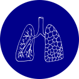
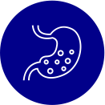
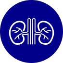

Dr Zubin Vaid is a Consultant M.D. General Physician and Diabetologist with training and experience in all branches of Internal Medicine and Emergency Medicine including Diabetes, Lifestyle related diseases like Hypertension and Dyslipidaemia, Cardiac ailments and Ischaemic Heart Disease, Infectious diseases and HIV medicine, Endocrine conditions and thyroid disease, Neurological disorders, Respiratory/lung related conditions, Gastrointestinal and Liver issues and kidney diseases.
Having a post graduate M. D. (Medicine) degree from the prestigious Seth G. S. Medical College and KEM Hospital, Mumbai and having worked as a lecturer in the same institute, he carries with him an experience of almost 20 years of medical practice. He also has a fellowship in Diabetes from the prestigious CMC (Christian Medical College) Vellore, both the Institutes being rated among the top Medical Institutes in India. He has also completed FCRS, FCCM and FVM, all fellowships in Critical care and Ventilatory Management from the Indian Society of Critical Care Medicine, Chester University, UK and ACE Academy Jaipur respectively.
Dr. Zubin Vaid, a man of principles, believes in helping his patients, keeping abreast with the latest developments in medical science and technology. He does this with a continuing study of medicine, and not only attending but conducting and being a speaker in various conferences, seminars and CMEs held for doctors with various medical bodies.
On the other hand, he also believes that treating his patients requires, besides the science, the art of healing which in turn is a combination of empathy, intuition, and above all the determination to 'connect' to his patient.
He believes that being genuine to his patients is of utmost importance for best patient outcomes.
A passion to heal and a need to cure or at least comfort his patients using this combination of the Art and Science of Medicine has been his constant endeavour.



Member of
"International Conference on AIDS India" at Chennai held from 01-12-01 to 05-12-01 "GOSUMEET 2001" held at KEM Mumbai
You are one of the best Doctor I have met...Thank you for the prompt treatment and the medications...The care and calmness you give to the patients and relatives was the best..Thank you so much Doctor...
Best Best Best. No words can describe Zubin sir. The way he do diagnosis, the way he explain and give medication to overcome problems, the way he counsel etc are all best and done in thorough professional way. I m his patient since 2012 and till date he is the only person from whom I want to always listen that what should I do in case of any medical issues, even if it is very minor problems than also I require his comfort zone. Also he respond to every calls based on severity. He also assist in getting discounts on medicine and report to ensure economical objective. Blessed to have him in my life.??. Thank you Sir. Means a lot.
He is the best doctor I have ever met in my life, Calm and composed, navigated us through very tough times. Thank u so much for being there always.
Niraant Clinic
3rd Floor, West Avenue, S.V. Road, next to HP Petrol Pump, opp. MA School, Zalawad Nagar, Station W, Andheri West, Mumbai, Maharashtra 400058
+91 9967183837 (Call Between 9 AM to 9 PM - Mon to Sat Only)
+91 98212 31939 (SMS ONLY)